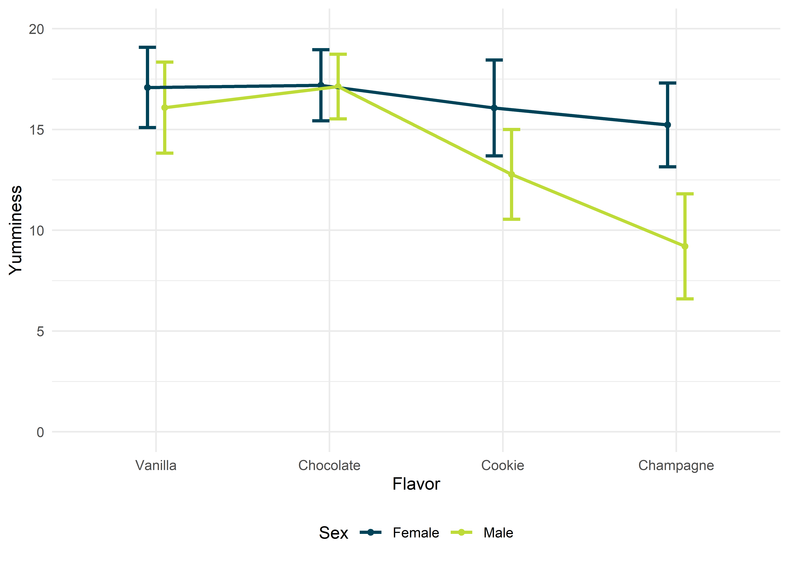

Faktorielle ANOVA

Mit einer (allgemeinen) faktoriellen ANOVA kann man mehr als zwei Gruppenmittelwerte in Abhängigkeit von kategorialen Prädiktoren vergleichen. Da die ANOVA ein Omnibus-Test ist, und so nur anzeigt, ob irgendwo ein signifikanter Unterschied zwischen den betrachteten Mittelwerten besteht, nutzt man entweder Kontraste oder Post-hoc-Tests, um herauszufinden, welche Mittelwerte sich letztendlich signifikant voneinander unterscheiden. Zusätzlich kann eine Simple Effects Analysis dazu genutzt werden, Unterschiede auf einzelnen Faktorstufen festzustellen.
Pakete
Alle Berechnungen und Abbildungen können wir mit unseren Standardpaketen durchführen. Wir benötigen das tidyverse zum Data Wrangling und zur Visualisierung der Daten. haven benötigen wir für den Import von SPSS-Dateien und rstatix für statistische Analysen.
library(tidyverse)
library(haven)
library(rstatix)Beispiel
Jeder liebt es, so viel ist klar. Aber mögen alle Personen jede Sorte Eis gleich gerne? Pfiffige Forscher haben sich an einem schönen Sommertag an einer Eisdile in der Dortmunder Innenstadt platziert und viele zufällig vorbeikommende Passanten vier Eissorten kosten lassen. Die Probanden konnten dann auf einer Skala von 0 – 20 angeben, wie lecker sie die eben probierte Eissorte fanden. Ein höherer Wert bedeutet eine bessere Bewertung. Wir wollen herausfinden, ob die Sorte selbst und das Geschlecht des Verkosters einen Einfluss auf den Geschmack hat. Wichtig ist dabei zu bachten, dass jeder Passant nur eine Eissorte probiert hat.
Klassisch
Die Daten zu diesem Experiment sind in der Datei ice_cream.sav. In der ersten Spalte (flavor) ist der Geschmack eingetragen, in der zweiten Spalte (sex) das Geschlecht des Verkosters. In der dritten Spalte finden wir unsere abhängige Variable yumminess. Wir berechnen hier also eine 4 \(\times\) 2 faktorielle ANOVA mit den Zwischensubjektfaktoren “Eissorte” mit vier Fakorstufen (“Vanilla”, “Chocolate”, “Cookie” und “Champagne”) und “Geschlecht” mit zwei Faktorstufen (“Female” und “Male”).
ice_cream <- read_spss("data/ice_cream.sav")
ice_cream <- ice_cream %>% mutate_if(is.labelled, as_factor)
ice_cream## # A tibble: 295 x 4
## id flavor sex yumminess
## <chr> <fct> <fct> <dbl>
## 1 1 Champagne Female 14
## 2 2 Vanilla Female 19
## 3 3 Champagne Female 16
## 4 4 Chocolate Female 17
## 5 5 Chocolate Female 16
## 6 6 Vanilla Male 16
## 7 7 Vanilla Female 17
## 8 8 Vanilla Male 18
## 9 9 Cookie Male 13
## 10 10 Champagne Female 13
## # ... with 285 more rowsVoraussetzungen
Da wir uns im GLM bewegen, gelten die üblichen Voraussetzungen.
EDA
# Deskriptive Statistiken zur Eissorte...
ice_cream %>%
group_by(flavor) %>%
get_summary_stats()## # A tibble: 4 x 14
## flavor variable n min max median q1 q3 iqr mad mean sd
## <fct> <chr> <dbl> <dbl> <dbl> <dbl> <dbl> <dbl> <dbl> <dbl> <dbl> <dbl>
## 1 Vanil~ yummine~ 74 11 20 17 15 18 3 2.96 16.6 2.18
## 2 Choco~ yummine~ 81 12 20 17 16 18 2 1.48 17.2 1.68
## 3 Cookie yummine~ 80 8 20 14.5 12.8 17 4.25 3.71 14.6 2.83
## 4 Champ~ yummine~ 60 2 20 14 11 15 4 2.96 13.2 3.64
## # ... with 2 more variables: se <dbl>, ci <dbl># ...zur Verteilung der Geschlechter...
ice_cream %>%
group_by(sex) %>%
get_summary_stats()## # A tibble: 2 x 14
## sex variable n min max median q1 q3 iqr mad mean sd
## <fct> <chr> <dbl> <dbl> <dbl> <dbl> <dbl> <dbl> <dbl> <dbl> <dbl> <dbl>
## 1 Fema~ yummine~ 162 10 20 17 15 18 3 2.96 16.4 2.21
## 2 Male yummine~ 133 2 20 15 12 17 5 4.45 14.5 3.51
## # ... with 2 more variables: se <dbl>, ci <dbl># ...und zu den Eissorten für jedes Geschlecht
ice_cream %>%
group_by(flavor, sex) %>%
get_summary_stats()## # A tibble: 8 x 15
## flavor sex variable n min max median q1 q3 iqr mad mean
## <fct> <fct> <chr> <dbl> <dbl> <dbl> <dbl> <dbl> <dbl> <dbl> <dbl> <dbl>
## 1 Vanil~ Fema~ yummine~ 36 12 20 17 16 19 3 2.22 17.1
## 2 Vanil~ Male yummine~ 38 11 20 16 15 18 3 2.22 16.1
## 3 Choco~ Fema~ yummine~ 41 13 20 17 16 18 2 1.48 17.2
## 4 Choco~ Male yummine~ 40 12 20 17 16 18 2 1.48 17.1
## 5 Cookie Fema~ yummine~ 45 10 20 16 14 18 4 2.96 16.1
## 6 Cookie Male yummine~ 35 8 18 13 11.5 14 2.5 1.48 12.8
## 7 Champ~ Fema~ yummine~ 40 11 20 15 14 17 3 1.48 15.2
## 8 Champ~ Male yummine~ 20 2 13 10 8.75 11 2.25 1.48 9.2
## # ... with 3 more variables: sd <dbl>, se <dbl>, ci <dbl>Wir haben Daten zu vier Eissorten. Verköstigt wurden am häufigsten Schokolade (\(n = 81\)) und Cookie (\(n = 80\)); bewertet wurden am besten Vanille (\(M = 16.57, SD = 2.18\)) und Schokolade (\(M = 17.16, SD = 1.68\)). Insgesamt haben \(N = 295\) Passanten an der Untersuchung teilgenommen, wovon \(n = 162\) Frauen und \(n = 133\) Männer waren.

Aufgrund der Abbildung bekommen wir eine grobe Idee davon, dass die untersuchten Frauen alle Eissorten in etwa gleich lecker fanden. Die Männer jedoch stehen weniger auf Cookie und überhaupt nicht auf Champagner. (Bah!) Jetzt ist die Frage, ob unsere Einschätzung, dass sich die Mittelwerte tatsächlich signifikant unterscheiden, richtig ist. Dafür berechnen wir die ANOVA.
Durchführung
Auch hier haben wir, wie bei der einfaktoriellen ANOVA, zwei Möglichkeiten, die Funktionsargumente einzugeben. Einmal als Formelschreibweise und einmal als Explizite Nennung in Form der Funktionsargumente. Momentan sind die Ergebnisse für die Definition in Formelschreibweise falsch (CRAN-Version 0.5.0), deshalb sollte man die Faktoren explizit als Funktionsargumente angeben. Wichtig ist hierbei, dass das Funktionsargument type = 3 angegeben wird. In der Psychologie (und generell in den Sozialwissenschaften und der Medizin) werden standardmäßig Quadratsummen vom Typ “III” berechnet.
# Formelschreibweise
ice_cream %>%
anova_test(yumminess ~ flavor*sex, type = 3)
# Funktionsargumente
ice_cream %>%
anova_test(dv = yumminess, between = c(flavor, sex), type = 3)Dieses Vorgehen liefert uns folgendes Resultat.
ice_cream %>%
anova_test(dv = yumminess, between = c(flavor, sex), type = 3)## ANOVA Table (type III tests)
##
## Effect DFn DFd F p p<.05 ges
## 1 flavor 3 287 73.263 3.28e-35 * 0.434
## 2 sex 1 287 106.711 1.78e-21 * 0.271
## 3 flavor:sex 3 287 25.377 1.37e-14 * 0.210An dieser Stelle lohnt es sich etwas, auf die Interpretation der Ergebnisse einzugehen. In den Zeilen flavor und sex sind die Haupteffekte dieser beiden Faktoren zu finden. Hat der Faktor “flavor” (= Eissorte) allein einen Einfluss auf die Einschätzung der Probanden? Ja, der Haupteffekt für “flavor” ist signifikant, da \(p < .05\). Das gleiche gilt für den Haupteffekt, und somit Einfluss, von “sex” (= Geschlecht); auch hier ist \(p < .05\). In der dritten Zeile finden wir den Interaktionseffekt von “flavor” und “sex”. Mit diesem wird also angegeben, ob es zwischen den beiden Faktoren eine Interaktion gibt. Eine Interaktion würde bedeuten, dass der Faktor “flavor” die abhängige Variable “yumminess” nicht in allen Faktorstufen von “sex” gleich beeinflusst. Der Einfluss von “flavor” auf “yumminess” wäre also zwischen den Geschlechtern unterschiedlich. Man kann das natrülich auch andersrum sagen: Der Interaktionseffekt gibt an, ob der Einfluss des Faktors “sex” auf “yumminess” in allen Faktorstufen von “flavor” gleich ist. Hier ist der ebenfalls signifikant, da \(p < .05\).
Bei diesem Versuch einer Beschreibung des Interaktionseffekts kann einem der Kopf rauchen. Deshalb ist es immer sinnvoll, sich die Daten in Diagrammen anzuschauen. Unten findest du die Daten auf zwei unterschiedliche Weisen präsentiert: Einmal ist “flavor” auf der \(x\)-Achse und die Linien sind getrennt nach “sex” (A; diese Abbildung sollte Dir bekannt vorkommen, weil sie identisch mit der oberen ist). Das andere Mal ist “sex” auf der \(x\)-Achse und die Linien sind nach “flavor” getrennt (B).

Diese Abbildungen zeigen beide denselben Sachverhalt, nur “von einer anderen Seite”. Welche Seite man darstellen sollte, hängt von verschiedenen Faktoren ab. Einerseits natürlich von der untersuchten Fragestellung. In diesem Fall wollten wir untersuchen, ob sich die “yumminess” von Eissorten unterscheidet, also haben wir die Eissorten auf die \(x\)-Achse gepackt. Zusätzlich dazu interessierte uns der Einfluss des Geschlechts, anhand dessen wir dann die Linien getrennt haben. Hätten wir uns jedoch eher gefragt, ob sich Frauen oder Männer generell in ihrer Einschätzung der Eissorten-“yumminess” unterscheiden, hätten wir wahrscheinlich “sex” auf die \(x\)-Achse schmeißen können, genau wie in Abbildung B.
Andererseits ist es wichtig auf dem Schirm zu haben, was das menschliche Gehirn noch verstehen und analysieren kann. Wir sind zwar mit einer großen rechenleistung ausgestattet, aber Bilder vermögen uns doch auch zu täuschen oder zu verwirren. Genrell kann man sagen, dass ein Interaktionseffekt vorliegt, wenn die eingezeichneten Linien nicht parallel verlaufen. Aus welcher Abbildung das besser hervorgeht, sollte man immer im Einzelfall entscheiden.
Wir haben jetzt also geklärt, dass ein Interaktionseffekt vorliegt. Nun sind beide Haupteffekte signifikant und der Interaktionseffekt noch dazu. Was bedeutet das jetzt? Irgendwie haben also die Eissorte und das Geschlecht der Passanten (“flavor” und “sex”) einen Einfluss auf die “yumminess” (als Haupteffekte), aber dieser Einfluss variiert, je nach Geschmack oder Geschlecht (Interaktionseffekt)?! Im Prinzip kann man sagen: Jap, genau. Und an dieser Stelle wird deutlich, was viele falsch machen, denn die Interpretation von Haupteffekten bei einem signifikanten Interaktionseffekt ist sinnlos. Statistisch sind die Haupteffekte zwar signifikant (ignoriert man das Geschlecht, hat also die Eissorte im Mittel einen Einfluss auf die “yumminess” und ignoriert man die Eissorte, hat Geschlecht im Mittel einen Einfluss auf die “yumminess”), aber diese Effekte variieren ja gerade in Abhängigkeit von den jeweiligen Faktorstufen, was uns der signifikante Interaktionseffekt ja mitteilt. Bei einem signifikanten Interaktionseffekt konzentrieren wir uns also nur auf diesen.
Aus Abbildung A können wir entnehmen, dass Frauen alle Eissorten ungefähr gleich gut einschätzten, die “yumminess” lag im Durchschnitt immer über 15. Männer hingegen hatten deutlichere Präferenzen: Bei Vanielle und Schokolade hielten sie noch mit und schätzten diese beiden Sorten ähnlich wie die Frauen ein, aber bei Cookie und spätestens bei Champagner war das Spiel vorbei. Diese beiden Sorten wurden von den Männern deutlich schlechter eingeschätzt als von den Frauen. Gibt es eine Möglichkeit herauszufinden, bei welcher Faktorstufe von “falvor” sich Frauen und Männer signifikant unterscheiden? Ja, die Simple Effects Analysis.
Simple Effects Analysis
Hier unterscheiden sich alle bekannten Statistik-Programme erheblich darin, ob diese Analyse überhaupt durchgeführt werden kann. Natürlich können wir das in R machen. JASP-Nutzer können diese Analyse ebenfalls ausfählen. SPSS-Nutzer müssen sich mit der Syntax auskennen und ihn dort von Hand eintragen, weil der Befehl nicht in den Dialogfeldern zu finden ist.
Bei der Simple Effect Analysis sollte beachtet werden, ob die Voraussetzung der Varianzhomogenität erfüllt ist. Einfach gesagt nehmen wir uns nämlich nun die Daten für jede einzelne Faktorstufe von “flavor”, berechnen eine ANOVA und untersuchen so, ob sich das Geschlecht für jede Faktorstufe unterscheidet. Ist die Voraussetzung der Varianzhomogenität gegeben, unterscheiden sich die Varianzen der Faktorstufen also nicht signifikant voneinander (= nicht signifikanter Levene-Test; wie in diesem Fall), dann sollten die Fehler des gesamten Modells einbezogen werden (Bibby, 2010). Sind die Varianzen jedoch signifikant unterschiedlich, sollten getrennte ANOVAs pro Faktorstufe berechnet werden.
Varianzhomogenität angenommen
Bei angenommener Varianzhomogenität sollen wir also die “Fehler des Gesamtmodells” berücksichtigen. Zu Beginn müssen wir somit unser Gesamtmodell definieren. Da wir uns im GLM, also im allgemeinen linearen Modell bewegen, ist unser Modell immer eine Form des linearen Modells, das in R mit lm() definiert wird. Mit der Formelschreibweise setzen wir das so um.
main_model <- lm(yumminess ~ flavor * sex, data = ice_cream)Nun gehen wir genau so vor wie beschrieben und berechnen für jede Faktorstufe von “flavor” ganz normale ANOVAs, geben als Fehlerterme jedoch die des Gesamtmodells (main_model) an. Wir untersuchen an dieser Stelle also den Einfluss von “sex” auf “yumminess” für alle Faktorstufen von “flavor”.
ice_cream %>%
group_by(flavor) %>%
anova_test(yumminess ~ sex, error = main_model)## # A tibble: 4 x 8
## flavor Effect DFn DFd F p `p<.05` ges
## <fct> <chr> <dbl> <dbl> <dbl> <dbl> <chr> <dbl>
## 1 Vanilla sex 1 287 4.22 4.10e- 2 "*" 0.015
## 2 Chocolate sex 1 287 0.023 8.81e- 1 "" 0.0000785
## 3 Cookie sex 1 287 48.4 2.35e-11 "*" 0.144
## 4 Champagne sex 1 287 110. 6.18e-22 "*" 0.276Damit erhalten wir eine Übersicht über alle vier durchgeführten ANOVAs, in denen der Einfluss von “sex” auf “yumminess” untersucht wurde. Die weiblichen und männlichen Verkoster unterschieden sich demnach in der Einschätzung der “yumminess” bei den Sorten Vanille, Cookie und Champagner.
Varianzhomogenität nicht angenommen
Nehmen wir keine Varianzhomogenität an, berechnen wir wieder für die einzelnen Faktorstufen getrennte ANOVAs, verzichten jedoch auf die Angabe der Fehlerterme.
ice_cream %>%
group_by(flavor) %>%
anova_test(yumminess ~ sex)## # A tibble: 4 x 8
## flavor Effect DFn DFd F p `p<.05` ges
## <fct> <chr> <dbl> <dbl> <dbl> <dbl> <chr> <dbl>
## 1 Vanilla sex 1 72 4.1 4.70e- 2 "*" 0.054
## 2 Chocolate sex 1 79 0.035 8.52e- 1 "" 0.000443
## 3 Cookie sex 1 78 40.0 1.48e- 8 "*" 0.339
## 4 Champagne sex 1 58 94.1 9.37e-14 "*" 0.619Effektstärke
Auch für die Simple Effects Analysis lassen sich Effektstärken für die einzelnen Vergleiche berechnen. Diese ergeben sich, wenn innerhalb der Faktorstufen nur zwei Gruppen miteinander vergleichen werden, als \[r = \sqrt{\dfrac{F(1, df_\text{d})}{F(1, df_\text{d}) + df_\text{d}}}\] mit \(df_\text{d}\) als Freiheitsgrade der Fehler.
In diesem Beispiel haben wir Varianzhomogenität angenommen, da der Levene-Test nicht signifikant war. Die Effektstärke zwischen Frauen und Männern für den Geschmack Vanille ist somit \[r = \sqrt{\dfrac{4.22}{4.22 + 287}}\] also 0.12. Für die übrigen Faktorstufen von “flavor” finden wir
| Faktorstufe | \(r\) |
|---|---|
| Vanille | 0.12 |
| Schokolade | 0.01 |
| Cookie | 0.41 |
| Champagner | 0.61 |
Berichten
Robust
library(WRS2)
# Robuste zweifaktorielle ANOVA
t2way(yumminess ~ flavor * sex, data = ice_cream)## Call:
## t2way(formula = yumminess ~ flavor * sex, data = ice_cream)
##
## value p.value
## flavor 251.7609 0.001
## sex 86.2149 0.001
## flavor:sex 82.1532 0.001# Robuster Post-hoc-Test für eine zweifaktorielle ANOVA
mcp2atm(yumminess ~ flavor * sex, data = ice_cream)## Call:
## mcp2atm(formula = yumminess ~ flavor * sex, data = ice_cream)
##
## psihat ci.lower ci.upper p-value
## flavor1 -0.25926 -0.88143 0.36291 0.24884
## flavor2 -0.22222 -0.89690 0.45246 0.36767
## flavor3 0.33333 -0.36461 1.03128 0.19534
## flavor4 0.03704 -0.26093 0.33500 0.72777
## flavor5 0.59259 0.23646 0.94873 0.00007
## flavor6 0.55556 0.10689 1.00422 0.00138
## sex1 0.88889 0.33913 1.43865 0.00204
## flavor1:sex1 0.25926 -0.36291 0.88143 0.24884
## flavor2:sex1 0.22222 -0.45246 0.89690 0.36767
## flavor3:sex1 -0.33333 -1.03128 0.36461 0.19534
## flavor4:sex1 -0.03704 -0.33500 0.26093 0.72777
## flavor5:sex1 -0.59259 -0.94873 -0.23646 0.00007
## flavor6:sex1 -0.55556 -1.00422 -0.10689 0.00138Non-parametrisch
Gibbet nicht.
Aus der Praxis
Klassisch
EDA
Durchführung
Berichten
Robust
Non-parametrisch
Literatur
Bibby, P. (2010). Simple Main Effects. In N. J. Salkind (Ed.), Encyclopedia of Research Design. SAGE. https://doi.org/10.4135/9781412961288.n421